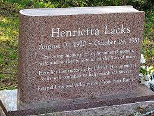

Henrietta Lacks
What is the contraversy with them?
- The main problem with HeLa cells is that they were obtained without the permission and consent of Henrietta Lacks or her family
- The cells were used in medical research and for commerical purposes, so some companies were profitting from Henrietta Lacks's cells
- The Lacks family objected to researchers publishing the DNA sequence of the genome of a strain of HeLa cells in 2013 as this genetic
information was available for public access
- There is now a change in the ethical ground-rules in the USA covering the taking and use of hospital biopsies without informed consent
- Henrietta Lacks and her cell line has now been recognised for the contribution to biomedical research and is celebrated by various Medical
Universities as well as the World Health Organisation
